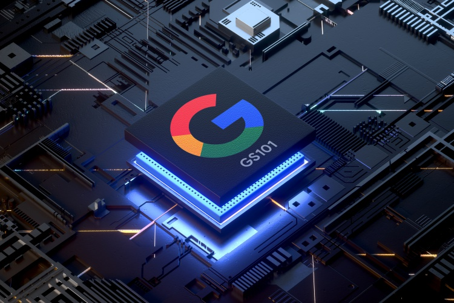

All About Google Whitechapel Chip

Since the beginning of 2019, we have been hearing rumors that Google is planning to make their own chipsets, which they will use in their future Pixel smartphones. Although users have not seen any working models or prototypes of Google’s own full-featured chipset in the next three years, Google has made a number of custom-designed chips in these three years. Such as- Pixel Visual Core, Titan M Security Chip, Neural Processing Unit etc.
Since the beginning of 2019, we have been hearing rumors that Google is planning to make their own chipsets, which they will use in their future Pixel smartphones. Although users have not seen any working models or prototypes of Google’s own full-featured chipset in the next three years, Google has made a number of custom-designed chips in these three years. Such as- Pixel Visual Core, Titan M Security Chip, Neural Processing Unit etc.

CPU
The most important part of a system on a chip is its CPU. Before we start talking about the CPU, it’s good to know that Google is building this chipset in partnership with Samsung. Samsung’s department that makes Exynos chipsets for their flagship smartphones is working with Google to make their in-house chipsets. Google is basically using some of Samsung’s IP (Intellectual Property) in their chip design so that they can create a 5-nanometer technology chipset with the help of Samsung.
Speaking of core counts, Google’s first Whitechapel chipset will have an Octacore processor. The processor will have a single high-frequency A6 core and three low-frequency A6 cores. There will also be four A55 cores, which will be used to handle power-efficient tasks. In the case of the first chipset, Google’s goal will be to create a decently powerful and battery-efficient chipset at the same time.
Performance
Those people, who have heard rumors about the new chipset of google may have thought that it was going to be one of the most powerful chipsets. But no, that’s not the case at all. Google is not making this new chipset the most powerful chipset. This means that even if you get very good performance from it, it would be wrong to expect better performance from any other flagship smartphone. If compared to Snapdragon, Google’s first Whitechapel chipset will be the equivalent of a Qualcomm Snapdragon 60 processor that is slightly less powerful than the Snapdragon 8.
However, even if it falls in the category of upper midrange chipset, it has almost the same performance as the flagship level. But of course, Google’s first Whitechapel chipset won’t be as powerful as the Snapdragon 7. Google is focusing more on the battery efficiency and other sectors of this chipset. However, this chipset is expected to be powerful enough for regular tasks and intensive gaming.
GPU
After CPU and performance, let’s talk about the GPU power of this chipset. According to a recent report from XDA Developer, Google’s first Whitechapel chipset will feature the Mali G-78 GPU, which is also used in Samsung’s latest flagship device, the Galaxy S21 Ultra. Although it lags behind the CPU, Google does not lag behind the GPU. So gamers can be confident with Google’s new chipset, that is to be expected. Moreover, since Google will use the AMOLED display with a 120 Hz refresh rate in the upcoming Pixel phones, the need for a high-end GPU remains.
And in addition to using high-end GPUs, Google will also optimize their chipset for gaming so that gamers can get the best gaming performance exclusively from their chipset. The Mali G-78 GPU can use a maximum of 28 cores. However, Samsung has so far implemented 14 cores in this highest GPU. But Google can increase the number of GPU cores for better gaming and graphics performance. However, Google has not said anything definite about this so far.
5G modem
A chipset manufactured in 2021 will not have 5G support, this cannot happen. Google’s WhatsApp Chapel chipset will feature Samsung’s in-house 5G modem, codenamed Shanon. Samsung’s 5G modem will support both Millimeter Wave and SubGHz 5G bands. And the device running on this chipset will support a maximum speed of 5.1 gigabits per second. However, the idea is that in the case of the United States, Google may be forced to use Qualcomm’s X55 modem due to legal issues. However, in countries outside the United States, you can definitely see Samsung’s in-house 5G modem using the Whitechapel chipset.
AI and machine learning
As you may have already guessed, the biggest focus of Google’s new in-house chipset is going to be on artificial intelligence and machine learning features. Of course, Google is currently one of the most advanced companies in the world in the field of artificial intelligence and machine learning. We already know that Qualcomm processors are capable of giving good enough AI performance. The Snapdragon 8 processor is capable of performing more than 26 trillion operations per second in terms of AI and machine learning.
Samsung’s Flashship Exynos chipsets can also deliver incredible performance using its neural processing unit. However, as far as is known, the AI performance of Google’s Whitechapel chipset on paper will not be as high-end as that of Samsung or Qualcomm. According to rumors, Google’s upcoming Whitechapel chipset supports a maximum of 5.6 trillion operations per second. However, in the case of Google, the chipset’s base AI performance is not the only factor.
Google has long ago designed custom chips for image processing and pixel neural cores on their devices. The Pixel Neural Core and Pixel Visual Core are two of Google’s most widely used machine learning chipsets developed with the help of Google Intel. Most likely, the integration of Google’s Whitechapel chipset with built-in AI and machine learning capabilities, as well as Google’s Existing chipsets.
Integrating Google’s Existing AI chipsets with the Whitechapel chipset is expected to make Google’s chipset’s AI performance much more optimized and more efficient than other high-end processors. However, in this case, Google is going to have full control over their supporting AI chip as well as the main system on-chip.
Why is Google making its own chipset?
Now the question may come to your mind that Google has been doing business in the smartphone market for several years with the release of their Pixel phone with Snapdragon processor. So why are they investing so much money and manpower in making their own in-house smartphone chipsets? This is because the user experience is better. If you use Snapdragon chipset in Google’s phone, Google does not have much control over the phone’s hardware except for the phone’s software and phone design / built quality. If Google phone software as well as the most important hardware of the phone can be made under their own supervision, then Google will have much more control over both their phone hardware and software than before.
This will allow them to better optimize their phones for a better user experience. Another reason for this is regular updates. Qualcomm’s board only officially supports packages for 3 years. As a result, even though Google promises regular updates to their Pixel phones, it is very difficult for Google to push updates on a phone even after 3 years and to ensure a good user experience even after the update. If Google uses their own chipset on all their upcoming Pixel phones, then Google will never have to rely on Qualcomm to push updates. In addition to these two reasons, Google has decided to develop their in-house chipset for many other reasons.
Find out more